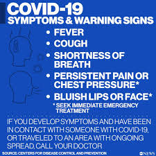

What Is CoVID-19?
CoVID-19, or Coronavirus disease 2019, is a viral disease
caused by a strand of the coronavirus. The coronavirus can lead
to respiratory disease as mild as the common cold, or severe as
MERS (Middle East Respiratory Syndrome), SARS (Severe Acute
Respiratory Syndrome).
The first case of CoVID-19 was detected on December 2019 in Wuhan, China.
There are currently over 150 000 cases worldwide.
How It Spreads
CoVID-19 is spread through respiratory droplets
from an infected person. These respiratory droplets are released
once an infected person coughs or sneezes and then travel by air.
Droplets infect others once inhaled, or land on surfaces and infect
individuals after they touch a contaminated surface and
then touch their face.
How To Protect Yourself
Ensure to check with your local health services and authority
about the latest information on CoVID-19. To minimize your chances of
being infected
- Regularly wash hands with soap and water for 15 seconds. If not avaliable use sanitizer and rub in hands for 15 seconds
- Keep at least 100cm from anyone who is coughing or sneezing
- Do not touch your face
- If you show any symptoms of CoVID-19, contact health aid and stay home. If you must go out wear a face mask
- If you have diabetes, heart/lung diease, or are above 65 years old, you are at higher risk of infection. Avoid travel to areas with high cases of CoVID-19
- Click here to see For Frequently Asked Questions
- Click here for Emergency Contacts
Global Response
As of March 15th 2020 over 150 000 individuals have been
infected and over 5 000 died, majority of which are above 65 years
old. The World Health Organization (WHO) has been .
Over 70 000 individuals have recovered so far and over 80 000 remain
infected, 6 000 over which are critical.
Who Is At Risk
CoVID-19 imposes an increased risk to those who are above
65 years old, have diabetes, have heart disease, or lung disease.
In addition to this, those who are around infected individuals have
an increase chance of contracting the disease.
Myths
There are a couple myths surrounding CoVID-19. Some include
- Africans are less susceptible to CoVID-19 and may even be immune. This
is not true at all. Africans are just as likely of being infected with CoVID-19 as
other places.
- I am unlikely to be infected with CoVID-19. As more and more cases are
confirmed in your area, the chances of being infected increase. To ensure safety please
take precaution and follow the advice of WHO and your health care advisors
- I can take medicine to stay safe from CoVID-19. There is currently no
medicine to treat or prevent CoVID-19. Please take precaution to protect yourself and
your community
- I should wear a mask to protect myself. Only wear a mask if you are showing symptoms
of CoVID-19, such as coughing and sneezing. If you do not have symptoms do not wear a mask
- It does not matter if I do not self isolate even though I might be infected with CoVID-19.THIS IS
NOT TRUE! CoVID-19 is easily spread throughout a community. Somalia currently does not have enough resources
to handle CoVID-19 as efficiently as other countries do. We are trying our best, however, to lower the risk of
millions dying, please self isolate for a period of 14 days. Doing so will only protect yourself and your community
- There is no point in contacting emergency services or health care providers. They can do nothing. This is
not true. We are currently working with organizations around the world to handle CoVID-19 as best as we can. However, we can only
do our best if every community memember cooporates with our efforts. Please contact us if you, or anyone you know may have CoVID-19
- I can protect myself from CoVID-19 by smoking, wearing multiple face masks, or taking antibiotics. This is not true, and
may even be harmful. To protect yourself please take precaution outlined here.